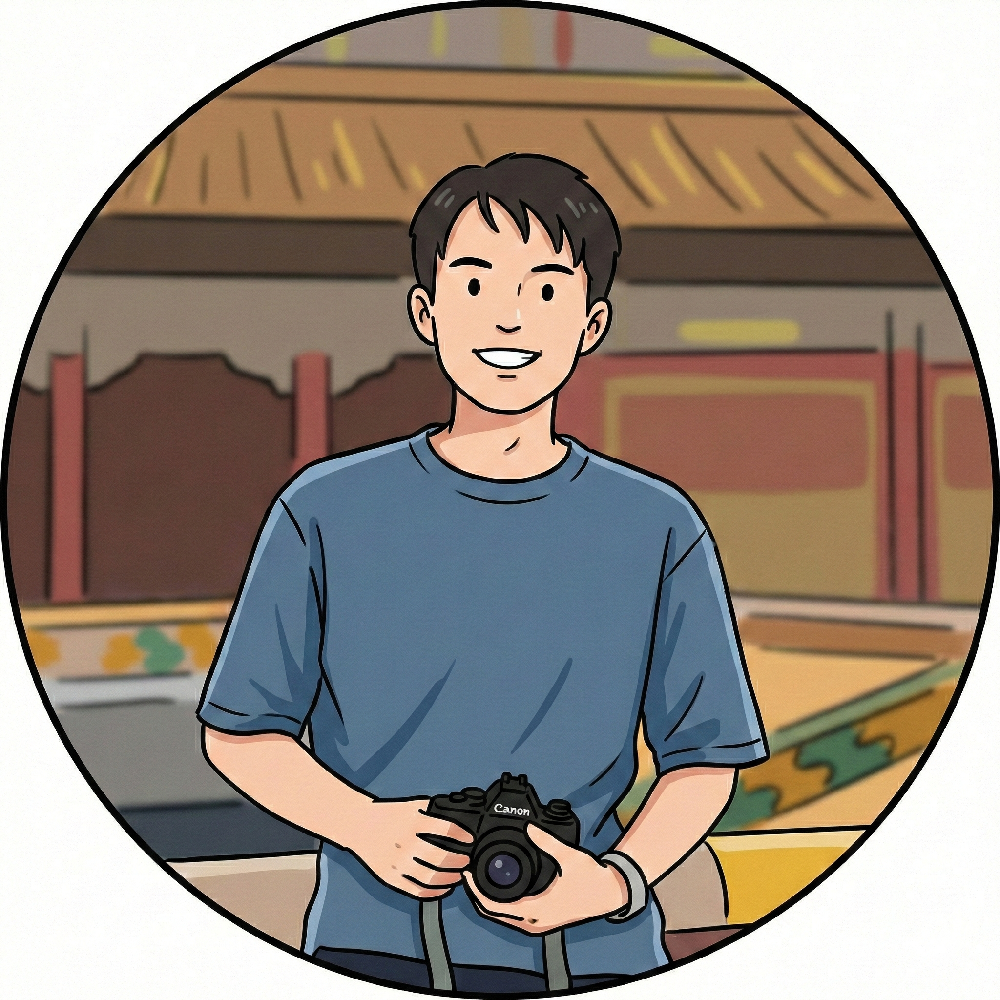

Hi there! This is Xinkai.

Thanks for stopping by! My name is Xinkai Chen, or 陳辛楷 in Chinese.
📍 Current Role
I'm currently based in the lovely, windy city of Chicago. I'm a Data Scientist at Elevance Health striving to use my AI/ML knowledge to make healthcare easier and better for humanity.
👨🏻🎓 Education
I graduated from Heinz College, Carnegie Mellon University in December 2020, with a Master's degree in Information Systems Management (MISM). I love Pittsburgh. Before that, I did my undergraduate at Fudan University at the School of Computer Science. I loved Shanghai.
🏡 Background
I was born and raised in Fuzhou, a beautiful coastal city in southeast China. It's been a while since I left, but I always dream of sharing its beauty with the world. I'm also a proud alumnus of Fuzhou No.1 Middle School.
📸 Hobbies
I love photography & videography for being able to capture and relive the moments of my life. Check out my Photography Website for some photos! I also love poetry, literature, movies, music, sports, food, and travel — everything that I find beautiful. Check out my thoughts and poems (written in Chinese) on 沐語 Mizukitales and follow for more!
That'd be all, I won't go into details in case you know too much about me :D